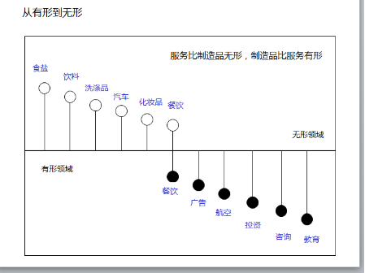

章节介绍：
服务在社会活动中随处可见，如：家政服务带来干净与整洁，维修服务带来资源的再利用，金融服务带来财富增值，餐饮服务带来就餐的快乐……随着生活水平的提高，人们拥有了更多可支配收入和更多闲暇时间，不再局限于基本的生活需求，更高层次的服务需求成为消费的主导，社会进入服务经济时代。
自20世纪50年代以来，全球经济经历着一场结构性的变革，对于这一变革，美国经济学家维克托·福克斯(Victor R. Fuchs)在1968年称之为“服务经济”。服务业在产业结构中占据越来越重要的地位。
《珠江三角洲地区改革发展规划纲要（2008 —2020）》中指出，到2012年，珠三角地区率先建成全面小康社会，初步形成科学发展的体制机制，产业结构明显升级，自主创新能力明显增强，生态环境明显优化，人民生活明显改善，区域城乡差距明显缩小，区域一体化格局初步形成，粤港澳经济进一步融合发展。人均地区生产总值达到80,000元，服务业增加值比重达到53%；城乡居民人均收入比2007年显著增长，平均期望寿命达到78岁，社会保障体系覆盖城乡，人人享有基本公共服务；城镇化水平达到80%以上；每新增亿元地区生产总值所需新增建设用地量下降，单位生产总值能耗与世界先进水平的差距明显缩小，环境质量进一步改善。
到2020年，率先基本实现现代化，基本建立完善的社会主义市场经济体制，形成以现代服务业和先进制造业为主的产业结构，形成具有世界先进水平的科技创新能力，形成全体人民和谐相处的局面，形成粤港澳三地分工合作、优势互补、全球最具核心竞争力的大都市圈之一。人均地区生产总值达到135,000元，服务业增加值比重达到60%；城乡居民收入水平比2012年翻一番，合理有序的收入分配格局基本形成；平均期望寿命达到80岁，实现全社会更高水平的社会保障；城镇化水平达到85%左右，单位生产总值能耗和环境质量达到或接近世界先进水平。
资料来源：《珠江三角洲地区改革发展规划纲要(2008-2020年)》。
自20世纪50年代以来，全球经济经历着一场结构性的变革，这一变革被美国经济学家维克托·福克斯(Victor R. Fuchs)在1968年称为“服务经济”。服务业在产业结构中占据越来越重要的地位。
随着服务业在社会经济中的比重不断提高，世界经济已进入服务经济时代，知识化、专业化趋势不断加强，服务业结构出现重大变化。一方面，以金融服务业、专业服务业、信息服务业、研发及科技服务业等技术、知识密集型服务业为代表的现代服务业迅速崛起为服务经济的支柱产业。现代服务业具有知识密集、技术密集、信息密集、人才密集的特点，是知识经济的先导产业，代表着服务业乃至世界经济的发展方向。另一方面，服务在其他行业的渗透日益加深，尤其是在制造业中呈现出服务转型的趋势。传统制造业不断运用新技术进行改造和转型，技术含量和专业化程度趋于提高，服务模式和经营模式不断创新。
经济发展经历了农业经济、工业经济和服务经济三个阶段，并表现出不同阶段特征(见表1-1)。
| 经济发展阶段 | 主导 | 特征 |
| 农业经济时代 | 生活性服务业 | 以住宿、餐饮、零售等传统生活性服务为主，主导部门是个人服务和家庭服务。 |
| 工业经济时代 | 生产性服务业 | 直接面向生产的服务业占据主导地位。初期以发展商业、交通运输、通信业为主；中期金融、保险和流通服务业快速发展；后期新型业态不断涌现，广告、咨询、商务服务等发展较快。 |
| 服务经济时代 | 社会服务业 | 服务经济基本形成且高速发展。人类发展需要的满足受到越来越高的重视，教育、医疗、娱乐、文化等个性化服务业崛起，成为主流业态。 |
资料阅读：广东处于工业化后期向后工业经济和知识经济过渡阶段
服务业的发展水平是衡量现代社会经济发达程度的重要标志之一。加快发展服务业，提高服务业在经济结构中的比重，尽快使服务业成为国民经济的主导产业，是推进经济结构调整、加快转变经济发展方式的必由之路，是实现综合国力整体跃升的有效途径。
我国对于服务业范围几经修改，目前采用的是2003年颁布的《三次产业划分标准》。
按照各行业产生的时间顺序，服务业分为传统服务业和现代服务业。
现代服务业的发展本质上来自于社会进步、经济发展、社会分工的专业化等需求，具有智力要素密集度高、产出附加值高、资源消耗少、环境污染少等特点。现代服务业既包括新兴服务业，也包括对传统服务业的技术改造和升级，其本质是实现服务业的现代化。表1-3具体概括了服务业的分类。
| 一级分类 | 二级分类 | 三级分类 | 四级分类 |
| 传统服务业 | 传统服务业（第一类） | 批发、零售业 | 批发、零售 |
| 住宿、餐饮业 | 住宿、餐饮 | ||
| 交通运输、仓储、邮政业 | 铁路运输、道路运输、城市公共交通、水上运输、航空运输、管道运输、装卸搬运和其他运输服务 | ||
| 租赁业 | 机械设备租赁、文化及日用品出租 | ||
| 居民服务业 | 家庭服务、美容保健服务、婚姻服务、修理与维护、清洁服务等 | ||
| 现代服务业 | 成熟型服务业(第二类) | 金融业 | 银行、证券、保险 |
| 房地产业 | 房地产 | ||
| 电信业 | 电信、广播电视传播视播服务、卫星传输服务 | ||
| 基于信息技术的新兴服务业 (第三类) | 计算服务、软件业 | 计算服务、软件 | |
| 商务服务业 | 企业管理服务、法律服务、广告、咨询与调查、知识产权服务、职业中介服务、市场管理、旅行社 | ||
| 科研、技术服务 | 研究与试验发展、专业技术服务、科技交流和推广服务业、地质勘查 | ||
| 提高科学文化素质的服务业 (第四类) | 教育 | 教育 | |
| 卫生、社会保障、福利业 | 卫生、社会保障业、社会福利 | ||
| 文化、体育、娱乐业 | 新闻出版、文化艺术、会展、体育、广播、电视、电影和音像、娱乐业 |
资料来源：方远平、毕斗斗：《国内外服务业分类探讨》，载《国际经贸探索》，2008（1）。作者整理。
现代服务业是伴随着科学文化、信息技术和知识经济的发展而产生的，用现代化的新技术、新业态和新服务方式改造传统服务业，创造需求和引导消费，向社会提供高附加值、高层次、知识型的生产服务和生活服务的服务业。在服务业发达的地区，现代服务业的发展呈现以下特点:
现代服务业已成为经济发展的重要门类，形成了相对完整的现代服务业体系
| 增加值（亿元） | 比重（%） | 比上年增长（%） | |
| 现代服务业 | 14988.9 | 100 | 16.4% |
| 交通运输、仓储和邮政业（现代物流业） | 1825.29 | 14.15% | 14.4% |
| 信息传输、计算机服务和软件业 | 1372.39 | 10.64% | 6.3% |
| 金融业（金融服务业） | 2658.76 | 20.62% | 16.4% |
| 房地产业 | 2813.95 | 21.82% | 13.9% |
| 租赁和商务服务业 | 1563.39 | 12.12% | 18.7% |
| 科学研究、技术服务和地质勘查业 | 438.79 | 3.75% | 16.3% |
| 水利、环境和公共设施 | 194.25 | 1.51% | 14.2% |
| 教育 | 1062.09 | 8.24% | 13.2% |
| 卫生、社会保障和社会福利业 | 639.59 | 4.96% | 12.2% |
| 文化、体育和娱乐业 | 282.50 | 2.19% | 21.1% |
资料来源：广东省统计局、国家统计局广东调查总队编：《广东统计年鉴，2011》，北京，中国统计出版社，
（二）现代服务业促进资源整合配置、优化服务效能、提升区域发展活力
（三）现代服务业发展促进就业，改善就业结构，提高从业人员素质
（四）现代服务业集聚、集群发展显露规模优势
（五）现代服务业固定资产投资规模增势迅猛，拉动现代服务业的快速发展
| 2010年固定资产投资） | 比重（%） | 2009年固定资产投资 | 比上年增长 | |
| 现代服务业 | 100009.30 | 100% | 8233.65 | 21.6% |
| 交通运输、仓储和邮政业（现代物流业） | 2008.27 | 20.1% | 1766.55 | 13.7% |
| 信息传输、计算机服务和软件业 | 259.32 | 2.6% | 278.46 | –6.9% |
| 金融业（金融服务业） | 36.11 | 0.4% | 20.41 | 76.9% |
| 房地产业 | 4912.46 | 49.1% | 4089.98 | 20.1% |
| 租赁和商务服务业 | 160.21 | 1.6% | 147.51 | 8.6% |
| 科学研究、技术服务和地质勘查业 | 99.63 | 1.0% | 67.88 | 46.8% |
| 水利、环境和公共设施 | 1914.02 | 19.1% | 1322.84 | 44.7% |
| 教育 | 256.63 | 2.6% | 203.3 | 26.4% |
| 卫生、社会保障和社会福利业 | 130.21 | 1.3% | 125.66 | 3.6% |
| 文化、体育和娱乐业 | 232.44 | 2.3% | 211.33 | 10.0% |
资料来源：广东省统计局、国家统计局广东调查总队编：《广东统计年鉴，2011》，北京，中国统计出版社，2011
-------------------------------我是待加工的分割线------------------------------------------
第2节 什么是服务 一、服务的界定 从20世纪50年代起，西方的市场营销学界就开始对服务进行关注和研究，在这一过程中，许多学者都对服务的概念提出自己的见解。以下简列三项服务的定义： 服务是一方向另一方提供的活动或行为，这些行为基本上是无形的，而且通常不会导致任何产出所有权的问题。 服务是创造价值的经济活动，顾客在特定的时间和地点从中受益，在接受服务过程中得到预期的改变。 服务是一种涉及某些无形因素的活动，它包括与顾客或其拥有财产之间的相互活动，不会造成所有权的转移，但服务产出不一定要依附实体产品。 上述关于服务的定义尽管是从不同角度描述的，但都具有以下共同点:一是强调了服务是提供利益和满足的行为或活动；二是强调了服务与有形商品可能发生联系或相互作用；三是强调了服务的重要属性特征——无形性。 首先，各种定义都明确指出服务是无形的，这直接区分了服务和商品之间的差异，因为商品是有形的，而服务的不同在于不能直接触摸到它的存在。其次，定义也具体说明了服务的不可分离性。既然服务的享受者参与了服务的生产与消费，那么在传递的过程中，服务的使用者和提供者之间就一定有双向互动。再次，人们在购买服务时不造成其所有权的转移。消费者不能拥有某种服务，服务只能被交换被使用。 二、服务分类矩阵 为了更深刻地了解和把握服务概念的内含，营销学家们打破了按照行业对服务进行分类的常规做法，制定出创新的服务分类方案。营销者可利用以下问题制定有效的服务分类。 服务行为的本质是什么？ 服务机构和其顾客的关系类型是什么？ 制定服务和判断服务质量的空间有多大？ 服务供求关系的特性是什么？ 服务是怎样传递的？ 根据上述问题的答案，洛夫洛克（Lovelock, 1983）提出以下的服务分类矩阵（见表1-8）。 表1-8 服务分类矩阵 服务的分类和性质 分类矩阵和范例 服务行为的本质 服务的接受者是什么或是谁 服务的接受者 人 物 服务行为的本质 有形的行为 保健 美容沙龙 饭店 航空运输 干洗 就医服务 无形的行为 教育 信息服务 娱乐 银行 法律服务 保险 与客户的关系 服务传递的本质 服务结构和顾客之间的关系类型 关系的类型 成员关系 非正式关系 服务传递的本质 服务传递的连续性 保险 银行 汽车协会和英国皇家汽车俱乐部 警察 无线电台 灯塔 不引人注意的事务 往来车票 剧院的募捐演出 长途电话 汽车租赁 邮政服务 电影院 在服务传递中，定制服务和判断服务质量 通过顾客与职员的接触判断服务的质量 定制服务的程度 通过顾客与职员接触判断服务质量 定制服务的特征 高 低 高 法律服务 建筑设计 教育（选修课） 教育（大规模） 预防性质的保健 计划 低 酒店服务 零售银行 质量高的饭店 公共交通 电器修理 电影院 服务供求关系的本质 提供服务受到限制的程度 一段时间后服务需求波动程度 需求波动 范围大 范围小 通常是最大需求 及时满足需求 电力 电话 消防服务 保险 银行 法律服务 超出正常能力 酒店 剧院 旅客运输 没有足够能力直接提供上述服务 服务传递的方式 顾客/服务机构互动的本质 服务途径的变化 服务途径的变化 地点单一 地点多 互动 顾客上门 剧院 理发店 公共汽车服务 快餐连锁店 提供者上门 草坪保护 出租车 邮政 应急修理 双方随时接头 信用卡 电视台（本地） 广播网络 电话公司 资源来源：Lovelock,c(1983)‘ Classifying services to gain strategic marketing insights’, Journal of Marketing ,47,summer,p.9-20.Translated and reproduced with permission of American Marketing Association. 服务工厂 航空公司 物流公司 饭店 服务作坊 医院 汽车修理 维修业 大众工厂 零售 批发 学校 专业服务 医生 律师 会计师 标准化 定制 资 本 密 集 劳 动 力 密 集 图1-1 服务过程矩阵 服务过程矩阵的四个象限被赋予了不同的含义。“服务工厂”提供标准化服务，具有较高的资本投资，更像一家流水线生产厂。“服务作坊”则允许有更多的服务定制，但在高资本环境下经营的。“大众化服务”的顾客在劳动力密集的环境中得到无差别的服务。寻求“专业性服务”的顾客则会得到专家为其提供的个性化服务。 任何一种服务组织的经理，不管是服务工厂、服务作坊、大众化服务，还是专业性服务，都面临着同样的挑战(见图1-2) 。高资本需求的服务要保持竞争力就必须密切关注技术发展。高资本投资也要求管理人员要合理安排需求，以便充分利用设备。劳动力密集的服务企业经理必须将关注点集中到人力资源方面。定制程度影响着控制服务质量的能力，同时也影响顾客对服务的感知。 图1-2 服务过程矩阵带来的挑战